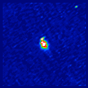
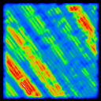
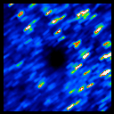
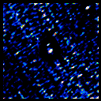
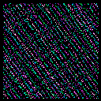

|
||||||

Surface Brightness Imageimg_m51_b3_20 This image represents the actual IRAS infrared sky as processed by the MCM algorithm. Intensity is in units of mega-Janskys per steradian. Coverage Imagecvg_m51_b3 The coverage image gives the sum of the weighted detector response at each image pixel over all detector samples. The actual number of detectors contributing to a particular pixel is roughly twice the value of that pixel in the coverage image. Examination of the coverage image can indicate non-uniformities in detector coverage. Correction Factor Variance Imagecfv_m51_b3_20 The correction factor variance image gives the statistical variance about the mean correction factor (computed for each detector) for that pixel. The MCM algorithm iteratively approximates the real sky by correcting the intensity in each pixel so that the simulated scan data are maximally similar to the actual scan data. If all the detectors agreed exactly on what the flux of a given pixel should be, all the correction factors would be one and the correction factor variance at that pixel would be zero. For a typical default-processed source with good signal to noise, the correction factor variances at iteration 20 should be between 0.001 and 0.01. Areas with relatively large correction factor variance either indicates the presence of data which do not agree with the majority of the scans (a "bad" scan, for example, or 3rd HCON calibration differences) or noisy or saturated regions. Alternatively, the source may not yet be as resolved as is possible with the MCM. A high correction factor variance may indicate the field would benefit from further iteration. Photometric Noise Imagephn_m51_b3_20 The photometric noise image indicates the internal photometric error of the detector samples resulting from the averaging of those that overlap, and is essentially the standard deviation of contributions to each pixel. It does not include absolute errors such as calibration errors. These image can thus be used to show the relative noise across an image, but not the absolute level of the photometric noise.
The beam sample image are a fairly sophisticated tool for estimating the achieved resolution in the HIRES images. The beam sample images make use of the simulation capability of HIRES, which allows the generation of modeled detector scans for an arbitrary input image. For the beam sample images, the input image is a pattern of spikes of user-specified integrated flux density planted on top of either a smoothed version of the 20-iteration HIRES image of the input field or a flat background. By default, either 25 spikes in a 5 by 5 grid (1 degree square field) or 81 spikes in a 9 by 9 grid (2 degree square field) with a height of 10 Jy are used. You may specify the positions and/or height of the spikes and doing so will provide optimal results. An option to plant spikes where a point source filter detects point-like structure is also available. One spike plus background model image is generated per band. Once the spike plus background model input image has been generated, simulated unenhanced scan data for it are generated. These data are then passed through HIRES as if they were real IRAS scans, and the resulting images are output, once for each surface brightness image, as the beam sample images. A two-dimensional gaussian fit is made to each spike location and the results reported in the beam width report. The resolution of the spikes at a given iteration should be a good indication of the resolution of a real point source of that flux at that location in the HIRES image. However, there are many reasons why some variation might occur and the beam sample images should be interpreted carefully. Detector Track Imagedet_m51_b3 This is a image which indicates which detector's center hit each pixel. If the center of a detector "footprint" (two dimensional modeled response function) hit a pixel, its ID is recorded in that pixel. If more than one detector hits a given pixel, the last to cross is kept. If no detector center hit the pixel, the value zero is kept. |